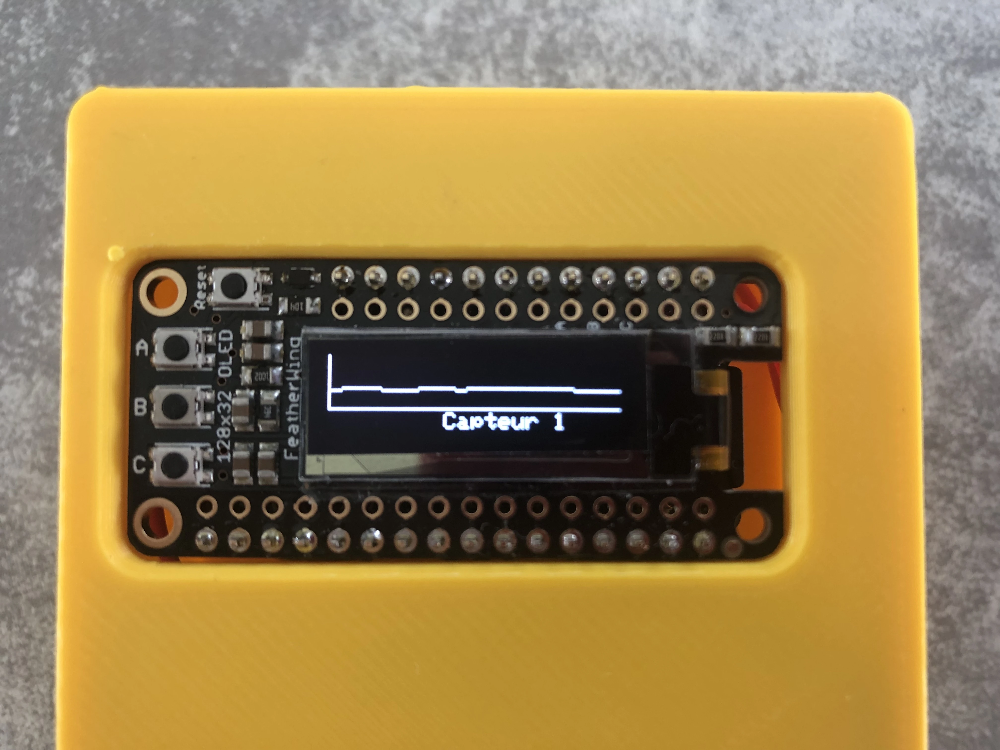
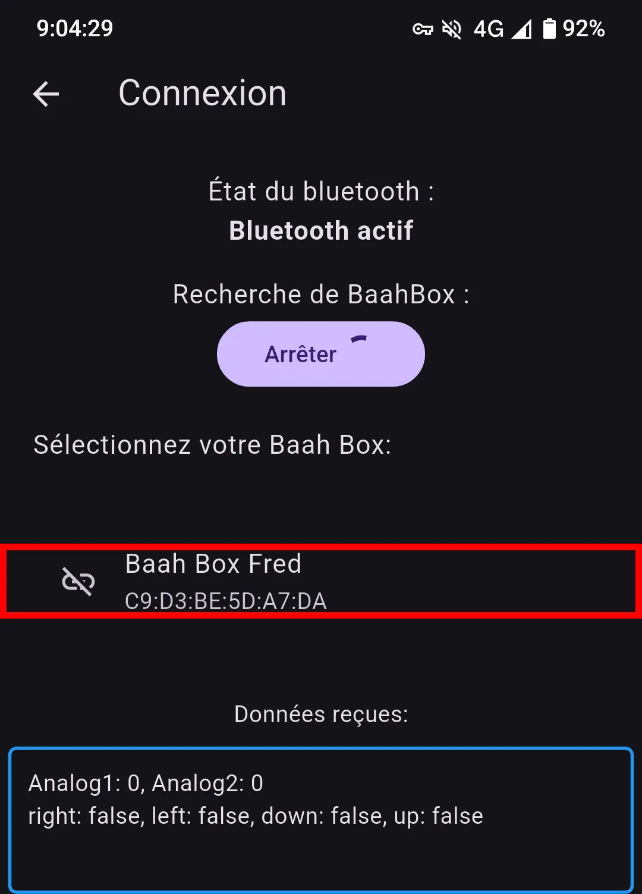

Manuel d'utilisation BaahBox
La BaahBox est un équipement pour la rééducation musculaire après un accident ou un traumatisme. La BaahBox se compose de deux éléments, une boite contenant l'électronique de communication avec une aplication smartphone, sur laquelle vient se brancher un module adapté à la rééducation visée (capteurs myo-électriques, poignées, joystick ou autres).
Composition
- Un boîtier électronique avec écran et boutons de contrôle
- Des capteurs (myo-électriques, poignées, joystick ou autres)
- Une application mobile (iOS et Android)
Fonctionnement
La BaahBox se connecte en Bluetooth (Bluetooth low energie pour consomer moins) à un smartphone ou une tablette. Les capteurs détectent l'activité musculaire et permettent de contrôler des jeux de rééducation spécialement conçus pour la rééducation.
Le nom "Baah" vient du cri du mouton en anglais, en référence au personnage principal de nos jeux de rééducation.
Utilisation de la BaahBox
Matériel fourni
- Boîtier BaahBox avec écran TFT intégré
- Capteurs myo-électriques avec électrodes adhésives
- Alimentation électrique ou batterie (optionnel)
Étapes d'allumage
- Allumez le boîtier BaahBox avec l'interrupteur latéral (si votre BaahBox est équipée d'une batterie, sinon branchez-la)
- Connectez le capteur à la prise DB9 du boîtier
La mise en route peut prendre plusieurs secondes. Si l'écran affiche des petits points blancs, attendez 2-3 secondes.
Navigation dans les menus
La BaahBox est équipée de plusieurs boutons pour naviguer dans les menus :
- Bouton A : Sélection/validation
- Bouton B : Affichage des courbes des capteurs
- Bouton C : Retour/annulation et affichage des informations du boîtier
- Bouton Reset : Redémarre la BaahBox
Informations générales sur le boitier
Pour afficher les paramètres globaux du boitier :
- Appuyez sur le bouton -C- pour afficher les paramètres globaux du boitier
- Un deuxième appui sur le bouton -C- affiche les informations sur le niveau de batterie du boitier
Vérification du bon fonctionnement des capteurs
Pour vérifier le bon fonctionnement des capteurs :
- Branchez le capteur souhaité sur la BaahBox (joystick, poignée, etc.)
- Appuyez sur le bouton -B- pour afficher les courbes des données envoyées par les capteurs :
- 1er appui : Affiche les 2 capteurs
- 2ème appui : Affiche uniquement le capteur 1

- 3ème appui : Affiche uniquement le capteur 2
- 4ème appui : Affiche les informations du joystick
- 5ème appui : Retour à l'affichage des 2 capteurs
- 1er appui : Affiche les 2 capteurs
Configuration
Connexion à l'application mobile
- Téléchargez l'application mobile BaahBox sur votre appareil (voir section Télécharger l'application)
- Activez le Bluetooth et lancez l'application
- Appuyez sur l'icône des paramètres
- Allez dans Connexion
- Appuyez sur "Démarrer" pour démarrer la recherche de votre BaahBox
- Puis sélectionnez votre BaahBox dans la liste

Configuration des capteurs
Pour configurer le type de capteur utilisé :
- Allez dans les paramètres de l'application
- Sélectionnez "General"
- Choisissez le type de capteur dans la liste
Choisir un jeu
Pour commencer à jouer :
- Cliquez sur le bandeau correspondant au jeu de votre choix
- Un court texte vous explique comment jouer
- Cliquez sur "Jouer" pour démarrer la partie
Astuce : Pour économiser la batterie de votre smartphone, pensez à couper le bluetooth après utilisation.
Télécharger l'application
L'application BaahBox est disponible sur les deux plateformes :
Scanner pour télécharger
Utilisez l'appareil photo de votre téléphone pour scanner le code correspondant à votre appareil :
Android

iOS
Ressources techniques
- Les sources Arduino sont dans le répertoire project du repo : BaahBox-Arduino
- Les sources de l'application iOS : BaahBox-iOS
- Les sources de l'application Android : BaahBox-Flutter-android
- Les ressources graphiques : BaahBox-assets